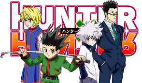
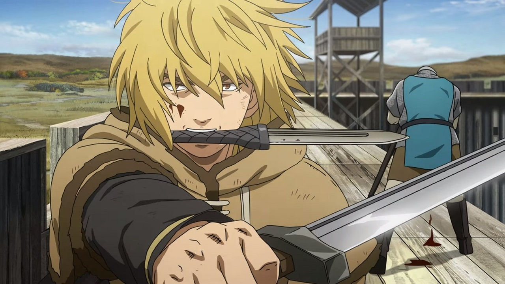

Animes em Destaque

Hunter x Hunter
Gon Freecss descobre que seu pai não está morto como havia sido dito, mas é um renomado Hunter. Determinado a encontrar seu pai, Gon decide se tornar um Hunter.

One Piece
Monkey D. Luffy, um jovem que sonha em se tornar o Rei dos Piratas, parte em uma jornada para encontrar o lendário tesouro One Piece e formar sua própria tripulação.

Vinland Saga
Thorfinn, filho de um dos maiores guerreiros vikings, embarca em uma jornada de vingança contra Askeladd, o homem que matou seu pai, enquanto busca o lendário Vinland.